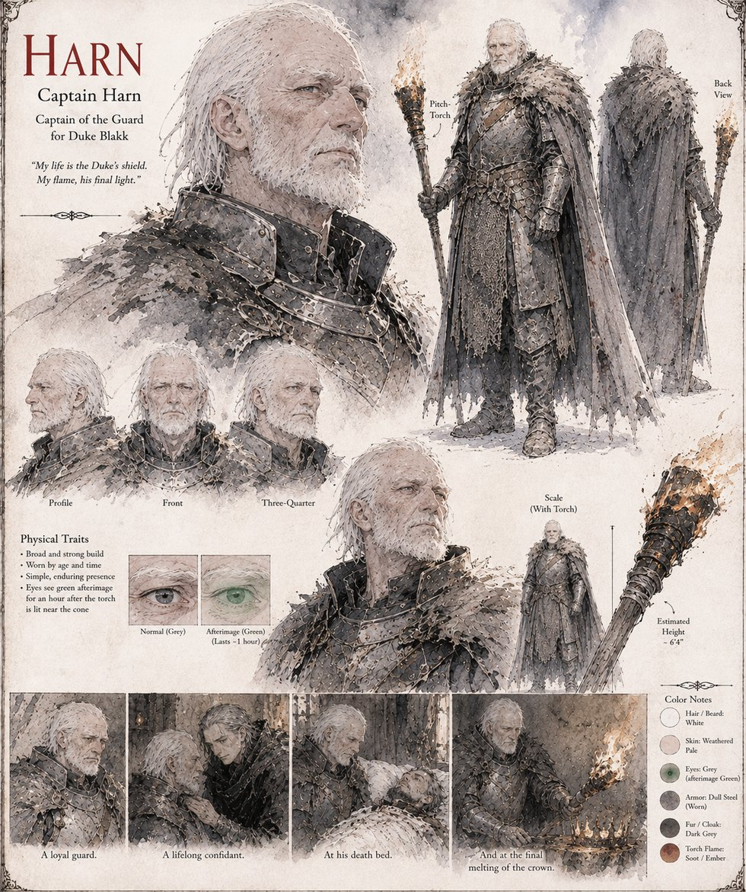

Harn
Captain Harn · Captain of the Guard to Duke Blakk
Captain of Duke Blakk's household guard, a broad, unhurried man who operates on the sound principle that anything he can't identify probably isn't worth identifying — until a torch swung near a discarded cone throws back a flare that leaves him seeing green for the better part of an hour. He is the one man Blakk ever tells the truth of his own coronation to (“I only wished to sit in the back”), and the one man who understands, without being told twice, exactly what his duke fears about it.
He catches Canon Voss's hired assassin by the wrist a half-second before the blade lands, forty years and by his own count a fourth save into a friendship neither man ever calls that aloud, and stands with Petrin, Prisca, and Sarel as one of the four witnesses to the crown's final, confirming melt. He never once tells Blakk that giving away a throne might have cost him less than accidentally winning one. He is not sure, by the end, that it would have.
“My life is the Duke's shield. My flame, his final light.”
Appears in The Vessel of Unmediated Grace